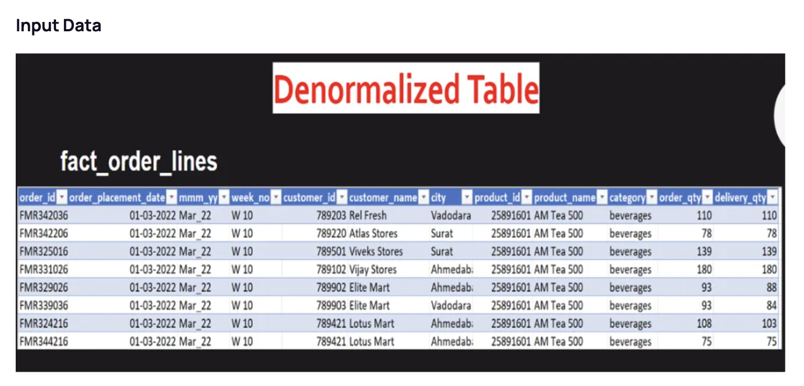
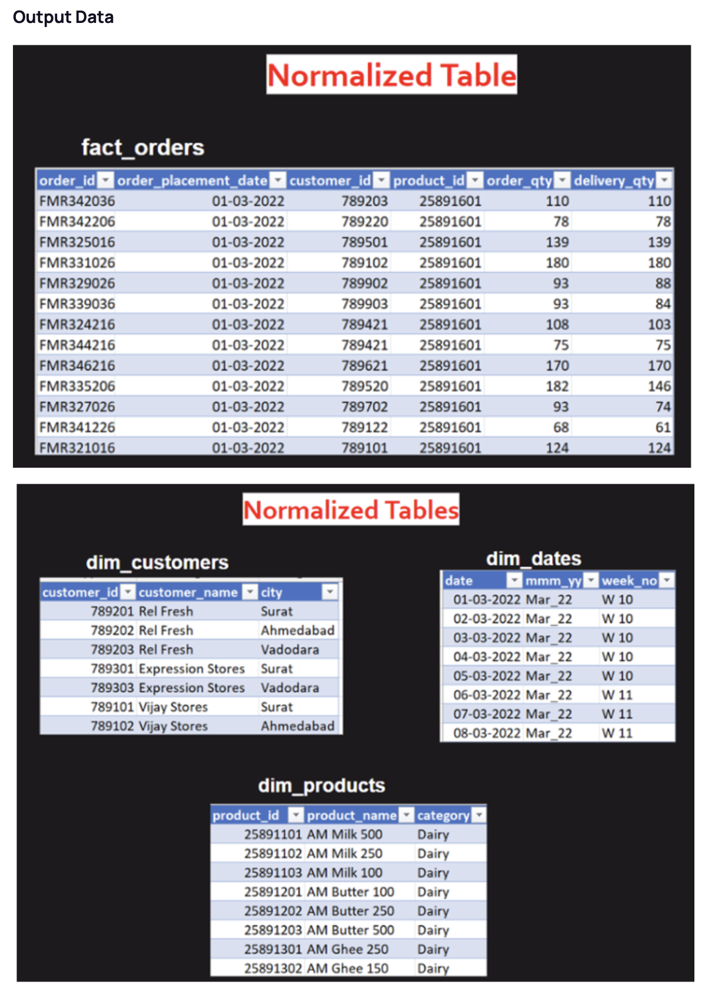
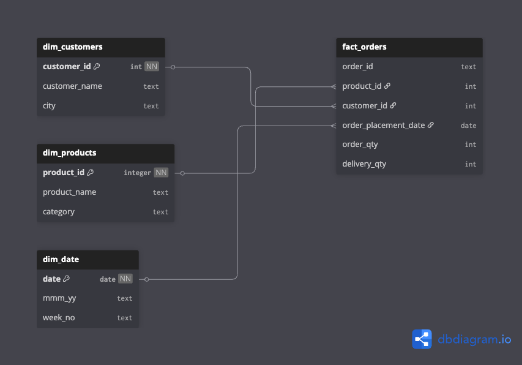

Tools Used: Microsoft Excel, MySQL Workbench, Jupyter Notebook
Overview of Tasks
- Data Cleaning and Ad-hoc Analysis
- Conversion of Dataset from Denormalized to Normalized Structure
- Basics of Scrum
Task 1: Data Cleaning & Ad-hoc Analysis
The HR department wanted to analyze the Work From Home (WFH%) trends for employees. As a
Data Analyst, my responsibility was to clean the dataset and provide actionable insights on WFH patterns.
Python (Pandas) Cleaning
Completed cleaning and transformations in a few lines of Python for efficiency.
- Imported CSV into Jupyter Notebook.
- Used commands such as:
- to_datetime() for date parsing
- .dt.strftime('%B') to extract month names
- .dt.dayofweek to map weekdays
- .str.rstrip() for removing trailing spaces
Here is jupyter notebook preview:
Excel Cleaning Process
- Dropped duplicates
- Standardized date formats
- Removed unwanted special characters from IDs
- Capitalized employee names and formatted them properly
- Created a dynamic alias formula for employee status:
=UPPER(LEFT(G2, 1) & IFERROR(MID(G2, FIND(" ", G2)+1, 1), " ") & IFERROR(MID(G2, FIND(" ", G2, FIND(" ", G2)+1)+1, 1), " "))
- Dropped duplicates again after transformations
- Added helper columns and built pivot tables for analysis
Here is excel worksheet preview: (scroll right in sheet for analysis)
----- x -----
Task 2: Data Normalisation
Overview
- One of client's dataset is currently in a de-normalized form, and they need our help to transform it into a normalized form.


- My task was to create proper fact and dimension tables based on the dataset

- I have imported fact_order_lines.csv to my local SQL workbench, and used below queries to create sepearate tables